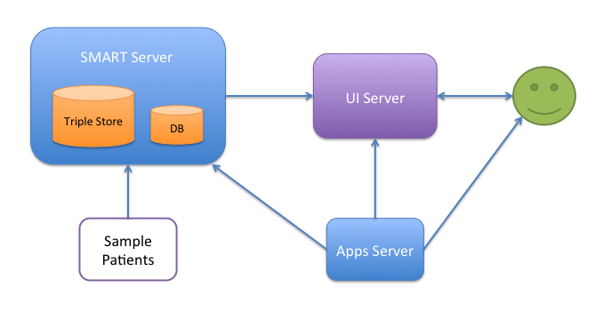

The SMART Reference container is a basic EMR system that fully implements the SMART specification. It is written in Python with the Django web framework. The patient medical data is stored in RDF graph form in a tripplestore engine (Open RDF Sesame by default) while the user and app data is in a relational database (Postgres or equivalent). The reference container consists of the following modules:

The sample patients repository contains a set of tools for generating a set of sample patients that can be used for demonstration purposes with the SMART reference container. The data for these sample patients has been deidentified and is fully HIPAA compliant.
The sample apps server contains a set of sample SMART applications that ship with the reference container. The server contains an embedded web server for providing access to the apps via HTTP.
The SMART server is the central repository for all the medical data in the container. It also serves as a registry for the SMART apps that are accessible through the reference container. The server has facilities for importing new patients (normally from the sample patients generator) in SMART RDF format and for registering and authorizing new SMART applications. These are provided via command-line tools (add details here). Finally, the SMART Server implements the complete SMART REST API with OAuth authentication and enforces the API access policy.
The UI server provides a web user interface that enables the reference container users to set up accounts on the system, log in, select apps that they would like to use, select patient records, and launch apps against the patient records. The UI server has special access tokens with elevated privileges to the SMART server that allow it to manipulate the user accounts on the server. The UI server configuration file can be used to "brand" the server with custom messages and also to enable a spacial "showcase" mode that is useful for demonstration purposes as it does not require login credentials (it automatically log the visitors into the designated showcase account). (need more details here)
As of SMART 0.6 the UI server also provides an interface for supporting authorization of standalone SMART applications.
 SMARTPlatforms.org © 2013
SMARTPlatforms.org © 2013